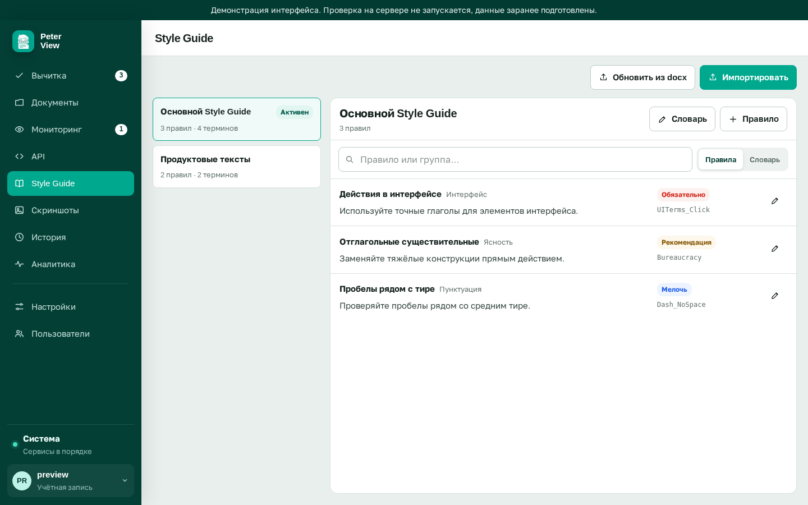

Style Guide¶
Эта страница описывает Стайл гайды с точки зрения пользователя сервиса: зачем гайд нужен проверке, из чего он состоит, как его создать, импортировать из документа, выбрать активным и как сервис использует его содержимое. Страница нужна редакторам и администраторам, которые переносят договоренности команды в настройки проверки.
Страница отвечает на вопросы: как научить сервис норме «пишем пользователь, а не юзер», почему одно и то же правило может работать через модель и через детерминированный поиск, и какие формулировки правил приносят пользу, а какие мешают. Форматы файлов, реестр встроенных правил и Vale-стили относятся к Developer Guide, страница Правила Style Guide в коде.
Что дает гайд проверке¶
Без пользовательского гайда работает встроенный базовый набор норм русской технической речи. Со своим гайдом сервис начинает находить нарушения, о которых договорилась конкретная команда: единое название продукта, запрет разговорных терминов, ограничения на начало абзацев, форматирование названий кнопок.
Гайд участвует в двух группах проверки из раздела Вычитка: Style Guide ищет нарушения правил и словаря, Термины и согласованность сверяет употребление терминов с лексиконом и находит внутренние противоречия. Чем конкретнее сформулировано правило, тем стабильнее результат.
Состав гайда¶
Гайд состоит из двух обязательных частей и одной опциональной. Перечислим их по порядку значимости.
Правила. Каждое правило содержит формулировку нормы и метку строгости:
Обязательно, Рекомендация или Мелочь. Правило бывает текстовым, например
«избегаем канцелярита: в целях, в рамках, осуществлять», или регулярным
выражением, например запрет на \/api\/v1 в пользу \/api\/v2. Текстовые
правила передаются языковой модели, регулярные выражения выполняются
детерминированным движком на каждом тексте.
Словарь (лексикон). Двухколоночный список пар «запрещенный термин, предпочтительный термин», например «юзер, пользователь» или «деплой, развертывание». Лексикон работает без модели: запрещенное слово находит детерминированный поиск, а модель получает список как контекст для дополнительных проверок.
Дополнительная инструкция. Свободный текст, который добавляется к промпту проверки при активном гайде. Он полезен для редких указаний общего характера и не заменяет правила.
Создание гайда с нуля¶
Гайды ведутся в разделе Style Guide. Просматривать список могут все пользователи, создавать и редактировать их может только администратор.

Порядок создания следующий.
- Нажмите кнопку Создать и задайте имя гайда.
- Добавляйте правила по одному: формулировка нормы и метка строгости.
- Заполняйте словарь парами «запрещенный термин, предпочтительный».
Для начала достаточно 10-15 правил, которые команда нарушает чаще всего. Остальные дописываются по мере того, как в отчетах всплывают новые типы нарушений.
Редактор гайда состоит из трех вкладок: Правила, Словарь и Инструкция. Над вкладками виден статус подбора правил (Лексический или Гибридный) и кнопки Импорт из документа и Сохранить.
Импорт из документа¶
Кнопка Импорт из документа принимает файлы форматов DOCX, TXT и MD размером до 50 МБ. Языковая модель вычитывает из документа формулировки норм и кандидатные пары лексикона. Импорт выполняется как отдельная задача: она видна на прогресс-баре и занимает до 12 минут на больших файлах.
Перед сохранением сервис показывает предпросмотр: список найденных правил с их строгостью и предупреждения на спорные места. Предпросмотр нужно отредактировать вручную. Импорт из объемного документа на сотни страниц почти всегда дает несколько десятков полезных правил и заметное количество мусора: модель воспринимает как правило заголовок раздела или пример из текста. Удалите такие кандидаты до сохранения.
Обновление гайда из новой версии документа¶
Кнопка Обновить на выбранном гайде извлекает правила из новой версии документа и сверяет их с текущим содержимым гайда. Совпадение определяется по заголовку правила с нормализацией написания (в том числе по буквам е и ё), совпавшее правило получает новую формулировку, остальные добавляются. Такой режим ведет гайд, который живет в репозитории команды как файл DOCX.
Выбор активного гайда¶
Каждый пользователь выбирает гайд, который применяется по умолчанию. Выбор хранится в профиле пользователя и ставится кнопкой Выбрать в списке гайдов. В форме проверки выпадающий список позволяет разово взять другой гайд, не меняя настройку профиля.
Выборы разных пользователей независимы: один сотрудник работает с активным гайдом Документация продукта, другой с гайдом Статьи в блог, и их проверки не мешают друг другу.
Как сервис использует содержимое гайда¶
Текстовые правила передаются модели. Короткие гайды помещаются в промпт целиком. Для длинных гайдов включается подбор: под каждый фрагмент текста отбираются релевантные правила, для чего используется поиск по эмбеддингам, если они настроены администратором.
Статус подбора виден в карточке гайда. Значение гибридный означает, что эмбеддинги работают и отбор качественный. Значение лексический означает подбор по ключевым словам; он точен на коротких формулировках, но повышает риск пропустить правило, сформулированное иными словами. Без настроенных эмбеддингов доступен только лексический режим.
Метка строгости правила влияет на уровень замечания в отчете. Обязательно выдает уровень Ошибка, Рекомендация выдает Замечание, Мелочь выдает Совет. Связь уровней с действиями редактора описана на странице Разбор замечаний.
Пользовательские правила-регулярки¶
Отдельный слой проверки это глобальные правила-регулярные выражения. Их заводит администратор в разделе правил, программный доступ описан в Developer Guide на странице HTTP API.
Такое правило состоит из регулярного выражения, сообщения и уровня. Оно выполняется на каждом тексте независимо от выбранного гайда. Типовой случай применения: запретить упоминание внутреннего названия продукта в публичных текстах.
Типичные ошибки при составлении правил¶
Перечисленные ниже ошибки снижают качество проверки и встречаются чаще всего.
- Правило-предпочтение без нормы. Формулировка «лучше короткие предложения» трактуется моделью широко, и советы появляются на каждом втором обороте. Формулируйте проверяемо: «не более 40 слов в предложении».
- Дублирование детерминированных проверок. Правило «пиши надень вместо одень» бессмысленно, потому что его покрывает словарь LanguageTool. Перед добавлением правила проверьте текст: если находка уже есть, править гайд не нужно.
- Метка обязательности без необходимости. За уровнем Ошибка редакторы идут править все подряд. Ставьте Обязательно только там, где нарушение блокирует публикацию.
- Лексикон с омонимами. Пара «экран, дисплей» запретит и термин «экран импорта». Слова с омонимией оформляйте текстовым правилом с указанием контекста, а не лексиконом.
Связанные разделы¶
Страницы, продолжающие тему гайдов.
- Проверка текста, файла и веб-страницы где выбирать гайд при запуске проверки.
- Разбор замечаний как уровни строгости превращаются в метки отчета.
- Языковая модель от чего зависит гибридный подбор правил.
- Правила Style Guide в коде формат встроенных правил, реестр и Vale-стили.